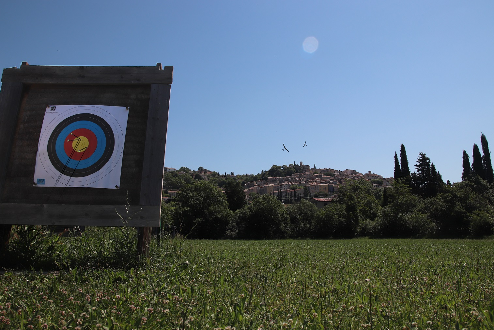

Bienvenue chez les Archers du Pays de Fayence !
Discipline sportive complète et conviviale : De 7 à 97 ans, venez découvrir la pratique du tir à l'arc à Fayence à travers une séance d'initiation gratuite sans engagement !
Quelques articles de la FFTA :


Notre club de tir à l'arc vous accueille au chemin notre Dame, lieu-dit la camandoule, 83440 Fayence.
Vous pouvez trouver plus d'informations ici.
Notre page Facebook :